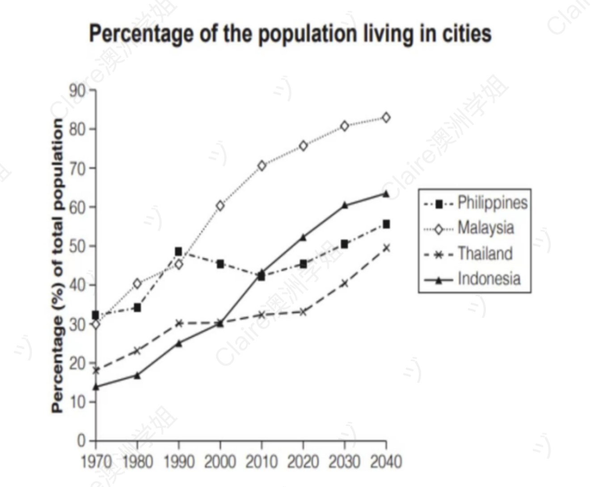

Urbanisation in Four Asian Countries (1970–2040)
动态类 折线图（4 条线 + 历史 + 预测） 修改日期：2026-04-24
| 评分维度 | 修改前 | 修改后 | 变化 | 说明 |
|---|---|---|---|---|
| Task Achievement (TA) | 5.0 | 7.0 | +2.0 | 修复 Overview 中 "population" 事实性错误（图表主题为 urbanisation rate）；修正 2040 Malaysia 数据（nearly 90% → over 80%）；起止段呼应完整（In 1970 ↔ By the end of the period）；用户提及的所有排名变化节点（1992/2000/2010）全部准确保留。 |
| Coherence and Cohesion (CC) | 5.5 | 7.0 | +1.5 | 用 Over the following decades / By the end of the period / although 替代口语化衔接；段内逻辑推进清晰（时间轴 → 排名变化 → 最终格局）。 |
| Lexical Resource (LR) | 5.0 | 7.0 | +2.0 | 统一使用 the figure for X / urbanisation rate / projected to / approximately / peak / surpassed / plateau 等折线图高频高分词汇；消除 population 主题词偏差；与 2026-04-13 Shop Closures 折线图模板保持词汇风格一致。 |
| Grammatical Range and Accuracy (GRA) | 5.0 | 7.5 | +2.5 | 零语法错误；使用破折号嵌入同位语、with 从属结构、分词短语、although 让步状语从句等多种句式；系统性修复全部冠词错误、时态错误、介词错误。 |
题目原文：The graph below gives information about the percentage of the population in 4 Asian countries living in cities from 1970 to 2020, with predictions for 2030 and 2040.
Summarise the information by selecting and reporting the main features, and make comparisons where relevant.

The line chart illustrates and predicts the proportion of urban residents in four Asian countries, including the Philippines, Malaysia, Thailand, and Indonesia, between 1970 and 2040.
26 wordsOverall, it is clear that all four nations figures increased considerably over the 70-year period, while figures for the Philippines show the most fluctuations. Notably, the Malaysia had the largest population for most of the period.
37 wordsFirstly, all the four countries had the smallest percentages of population in 1970 and will be projected to reach their highest number in 2040. However, in the next 40 years, the urban population percentage in Philippines fluctuated, until in 1992 when Malaysia secondly surpassed the Philippines at about 48% and maintained its top ranking. Over time, the figures for Indonesia rose steadily, overtaking Thailand in 2000 and Philippines in 2010, becoming the second-highest, just below the Malaysia. Thailand's population grew fast at first, then reached a plateau from 1990 to 2020, while this country was expected to have a rapid increase after 2020 to 2040.
105 wordsIn 1970, Philippines was the most urbanized country for either nations, with just over 30% of its population living in urban areas. This was followed by Malaysia (30%), Thailand (18%), and Indonesia (13%). Although the figures are noticeable fluctuate during 1970 to 2010, from 2010 to 2040, no further ranking changes are predicted for them. Malaysia is expected to have the largest proportion of people living in cities, nearly 90%, followed by Indonesia at 60%, Philippines at about 55%, and Thailand at just 50%.
84 words开头段（Introduction / Paraphrase）
原因：(1) 沿用 2026-04-13 Shop Closures 已固化的 "The line graph illustrates..." 开头模板；(2) 用破折号嵌入四国名称同位语，比 including 更精确；(3) 补充"projections provided for 2030 and 2040"，忠实反映题目中 "predictions" 关键信息；(4) 删除冗余的 and predicts。
概述段（Overview）⚠️ 存在事实性错误，需较大幅度修正
⚠️ 本段存在 Task 1 最严重类型的错误——对图表主题的**事实性误读**：原句 "had the largest population" 意为"人口总量最大"，但本图展示的是 "percentage of the population living in cities"（**城市化率**），不是人口总量。这一错误会直接触发 TA 失分。
原文中的具体错误：原因：(1) 修复最严重的事实性错误——"largest population"（人口总量）改为 "highest urbanisation rate"（城市化率），与图表主题完全对齐；(2) 保留用户原本识别到的两个关键特征（四国均上涨 + Malaysia 领先），但用更精准语言表达；(3) 用 "the figure for X" 固定搭配替代拗口的 "X figures"，与 2026-04-13 Shop Closures 折线图模板保持一致。
主体段一（Body Paragraph 1）— 时间序列 + 排名变化
However,
原因：(1) 完整保留用户原文所有信息点——1970 起点、1992 Malaysia 反超、Indonesia 两次超越（2000 超 Thailand，2010 超 Philippines）、Thailand 平台期、2020-2040 预测上升；(2) 修复所有国家名冠词和时态错误；(3) 统一使用 "the figure for X" 取代混乱的 figures/population，与折线图固化模板一致。
主体段二（Body Paragraph 2）— 起止排名快照
By the end of the period, 内容补充 添加时间标志词让下文 2040 数据更有定位感，与前文 "In 1970" 形成起止对应 Malaysia is expected to have the largest proportion of people living in cities
原因：(1) 完整保留用户原文所有数据点（1970 四国数值、2040 四国数值、2010-2040 无排名变化）；(2) 修复 "are noticeable fluctuate" 等严重语法错误；(3) 修正数据准确性（nearly 90% → over 80%）；(4) 添加 "By the end of the period" 形成起止段呼应（In 1970 ↔ By the end of the period）；(5) 统一 the Philippines / Malaysia 等国家名冠词使用。
内容与结构建议
修改统计
本次修改保留了用户"四段式 + 时间推进 + 起止快照"的良好结构，重点完成五方面提升：(1) 修复 Overview 中最严重的事实性错误——"largest population" → "highest urbanisation rate"，使全文主题与图表对齐；(2) 系统性修正国家名冠词（the Philippines 补 the / Malaysia 去 the）；(3) 统一主题词——用 "the figure for X" 替代混乱的 population / figures，与折线图固化模板一致；(4) 修复时态混乱（will be projected → are projected / was expected → is expected）；(5) 数据精确化（nearly 90% → over 80%）。用户原文所有信息点全部保留——1970 起点排名、1992 Malaysia 反超、Indonesia 两次超越、Thailand 平台期后再上升、2040 最终排名均完整呈现。
The line graph illustrates the proportion of urban residents in four Asian countries — the Philippines, Malaysia, Thailand, and Indonesia — between 1970 and 2040, with projections provided for 2030 and 2040.
30 wordsOverall, it is clear that the figures for all four nations rose considerably over the 70-year period, while the figure for the Philippines fluctuated the most. Notably, Malaysia had the highest urbanisation rate for most of the period, establishing a clear lead from around the 1990s onwards.
49 wordsIn 1970, all four countries recorded their lowest urbanisation rates, and all are projected to reach their peak by 2040. Over the following decades, the urban population percentage in the Philippines fluctuated mildly, until around 1992 when Malaysia surpassed the Philippines at approximately 48% and maintained its top ranking thereafter. The figure for Indonesia rose steadily, overtaking Thailand in around 2000 and the Philippines in around 2010 to become the second-highest, just below Malaysia. Thailand's figure grew rapidly at first and then reached a plateau between 1990 and 2020, although it is expected to rise rapidly again from 2020 to 2040.
101 wordsIn 1970, the Philippines was the most urbanised country of the four nations, with just over 30% of its population living in urban areas, followed by Malaysia (30%), Thailand (18%), and Indonesia (13%). Although the figures fluctuated noticeably between 1970 and 2010, no further ranking changes are predicted from 2010 to 2040. By the end of the period, Malaysia is expected to have the largest proportion of people living in cities at over 80%, followed by Indonesia at around 60%, the Philippines at about 55%, and Thailand at just 50%.
90 words